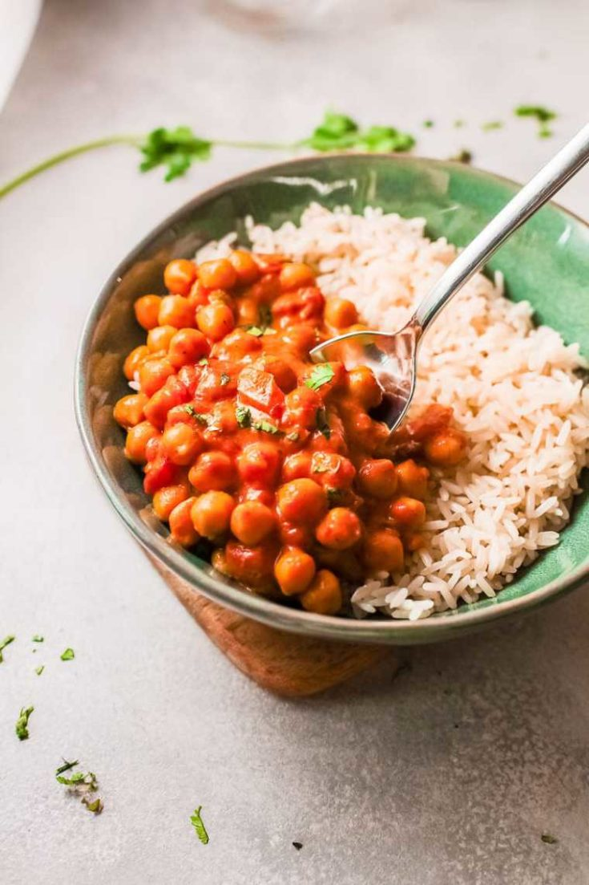

Chana Masala

This classic Indian chickpea stew is spicy, flavorful, and vegan without trying to be.
Soul warming Chana Masala is an Indian restaurant dish that’s easy to make at home. Chickpeas simmered in a spicy tomato gravy have the signature Indian spices you’ll love.
Like many restaurant recipes you’ll be surprised how easy this one is. No need to wait to go out or for take out.
You can have this on the dinner table in less than 30 minutes and its absolutely delicious. And naturally gluten free.
Ingredients
- 3 tbs vegetable oil
- 1 medium red onion - chopped
- 3/4 tsp sea salt
- 1 tbs fresh ginger
- 5 cloves garlic - minced
- 1 serrano pepper - diced (no seeds)
- 2 tsp ground cumin
- 2 tsp ground coriander
- 1/2 tsp cayenne pepper
- 3/4 tsp tumeric
- 1 tsp garam masala
- 1 15-ounce can crushed tomatoes
- 2 15-ounce cans chickpeas - drained
- prepared rice - for serving
- fresh cilantro - chopped for garnish
Steps
- Heat the oil in a large pan over medium heat. Add the red onion with a pinch of the salt and cook until translucent, around 5 minutes.
- Add the ginger, garlic and serrano pepper cook 30 seconds or until fragrant.
- Add the spices (cumin, coriander, cayenne pepper, turmeric and garam masala); cook an additional minute.
- Add the tomatoes cook 1 minute.
- Raise heat to medium high. Add the chickpeas. Bring to a full simmer. Reduce heat to medium-low to a gentle simmer and cook until the chickpeas are soft. 20-25 minutes.
- Serve over prepared rice. Garnish with chopped fresh cilantro if desired.
- Enjoy!
Return to Homepage